MYSQL数据库笔记
进入MySQL
1 | mysql -u root -p |
数据库操作
创建数据库
1 | create DATABASE 数据库名; |
数据库名字必须唯一；
查看数据库
1 | show databases; |
使用或者切换数据库
1 | use 数据库名; |
修改数据库编码方式
1 | ALTER DATABASE 数据库名 DEFAULT CHARACTER set 目标编码方式; |
删除数据库
1 | drop DATABASE 数据库名; |
数据库存储引擎
InnoDB： 支持事务处理，支持外键，支持崩溃修复能力和并发控制。如果需要对事务的完整性要求比较高（比如银行），要求实现并发控制（比如售票），那选择InnoDB有很大的优势。如果需要频繁的更新、删除操作的数据库，也可以选择InnoDB，因为支持事务的提交（commit）和回滚（rollback）。
MyISAM： 插入数据快，空间和内存使用比较低。如果表主要是用于插入新记录和读出记录，那么选择MyISAM能实现处理高效率。如果应用的完整性、并发性要求比 较低，也可以使用。
MEMORY： 所有的数据都在内存中，数据的处理速度快，但是安全性不高。如果需要很快的读写速度，对数据的安全性要求较低，可以选择MEMOEY。它对表的大小有要求，不能建立太大的表。所以，这类数据库只使用在相对较小的数据库表。
注意：同一个数据库也可以使用多种存储引擎的表。如果一个表要求比较高的事务处理，可以选择InnoDB。这个数据库中可以将查询要求比较高的表选择MyISAM存储。如果该数据库需要一个用于查询的临时表，可以选择MEMORY存储引擎。mysql数据库默认使用InnoDB存储引擎。
表操作
创建表
1 | create TABLE 表名(字段名1 数据类型(完整性约束条件) PRIMARY KEY, 字段名2 数据类型,........); |
PRIMARY KEY 只在主键后面才有且仅有一个
主键是指唯一标识数据的属性，主键只能是非空约束。
如果需要指明多个字段为主键
1 | create TABLE 表名(字段名1 数据类型(完整性约束条件),字段名2 数据类型,........, PRIMARY KEY(字段x,字段y,...)); |
若需要创建外键约束
外键约束是指引用其他表的主键。
1 | create TABLE 表名(字段名1 数据类型(完整性约束条件), 字段名2 数据类型,........,CONSTRAINT 外键名 FOREIGN KEY(字段名n) REFERENCES 引用表名(引用表的主键名)); |
主键约束和外键约束不能作用于同一字段。
创建字段指明非空约束，默认是空。
1 | create TABLE 表名(字段名1 数据类型(完整性约束条件), 字段名2 数据类型 NOT NULL,........); |
唯一约束唯一标识数据库表中的每条记录,可以定义多个。
1 | create TABLE 表名(字段名1 数据类型(完整性约束条件), 字段名2 数据类型 UNIQUE,........); |
创建默认约束。默认约束是指，若未给该字段赋值，则默认设置为设置值。
1 | create TABLE 表名(字段名1 数据类型(完整性约束条件), 字段名2 数据类型 DEFAULT '默认值',........); |
mysql的数据类型
数值类型
| 类型 | 大小 | 范围（有符号） | 范围（无符号） | 用途 |
|---|---|---|---|---|
| TINYINT | 1 Bytes | (-128，127) | (0，255) | 小整数值 |
| SMALLINT | 2 Bytes | (-32 768，32 767) | (0，65 535) | 大整数值 |
| MEDIUMINT | 3 Bytes | (-8 388 608，8 388 607) | (0，16 777 215) | 大整数值 |
| INT或INTEGER | 4 Bytes | (-2 147 483 648，2 147 483 647) | (0，4 294 967 295) | 大整数值 |
| BIGINT | 8 Bytes | (-9,223,372,036,854,775,808，9 223 372 036 854 775 807) | (0，18 446 744 073 709 551 615) | 极大整数值 |
| FLOAT | 4 Bytes | (-3.402 823 466 E+38，-1.175 494 351 E-38)，0，(1.175 494 351 E-38，3.402 823 466 351 E+38) | 0，(1.175 494 351 E-38，3.402 823 466 E+38) | 单精度 浮点数值 |
| DOUBLE | 8 Bytes | (-1.797 693 134 862 315 7 E+308，-2.225 073 858 507 201 4 E-308)，0，(2.225 073 858 507 201 4 E-308，1.797 693 134 862 315 7 E+308) | 0，(2.225 073 858 507 201 4 E-308，1.797 693 134 862 315 7 E+308) | 双精度 浮点数值 |
| DECIMAL | 对DECIMAL(M,D) ，如果M>D，为M+2否则为D+2 | 依赖于M和D的值 | 依赖于M和D的值 | 小数值 |
日期和时间类型
| 类型 | 大小 ( bytes) | 范围 | 格式 | 用途 |
|---|---|---|---|---|
| DATE | 3 | 1000-01-01/9999-12-31 | YYYY-MM-DD | 日期值 |
| TIME | 3 | ‘-838:59:59’/‘838:59:59’ | HH:MM:SS | 时间值或持续时间 |
| YEAR | 1 | 1901/2155 | YYYY | 年份值 |
| DATETIME | 8 | 1000-01-01 00:00:00/9999-12-31 23:59:59 | YYYY-MM-DD HH:MM:SS | 混合日期和时间值 |
| TIMESTAMP | 4 | 1970-01-01 00:00:00/2038结束时间是第 2147483647 秒，北京时间 2038-1-19 11:14:07，格林尼治时间 2038年1月19日 凌晨 03:14:07 | YYYYMMDD HHMMSS | 混合日期和时间值，时间戳 |
字符串类型
| 类型 | 大小 | 用途 |
|---|---|---|
| CHAR | 0-255 bytes | 定长字符串 |
| VARCHAR | 0-65535 bytes | 变长字符串 |
| TINYBLOB | 0-255 bytes | 不超过 255 个字符的二进制字符串 |
| TINYTEXT | 0-255 bytes | 短文本字符串 |
| BLOB | 0-65 535 bytes | 二进制形式的长文本数据 |
| TEXT | 0-65 535 bytes | 长文本数据 |
| MEDIUMBLOB | 0-16 777 215 bytes | 二进制形式的中等长度文本数据 |
| MEDIUMTEXT | 0-16 777 215 bytes | 中等长度文本数据 |
| LONGBLOB | 0-4 294 967 295 bytes | 二进制形式的极大文本数据 |
| LONGTEXT | 0-4 294 967 295 bytes | 极大文本数据 |
修改数据表
修改表名
1 | alter TABLE 原表名 rename 新表名; |
查看表字段和数据类型
1 | desc 表名; |
修改表字段名和数据类型
1 | alter TABLE 表名 CHANGE 旧字段名 新字段名 新数据类型(完整性约束); |
添加单个主键约束
1 | alter TABLE 表名 MODIFY 字段名 新数据类型(完整性约束) PRIMARY KEY; |
添加多个主键约束
1 | alter TABLE 表名 ADD PRIMARY KEY(字段名1,字段名2); |
删除主键约束
1 | alter TABLE 表名 DROP PRIMARY KEY; |
修改字段位置
1 | alter TABLE 表名 MODDIFY 原字段名 新数据类型(完整性约束) AFTER 欲放置位置的前一个字段名; |
或者
放到表字段首
1 | alter TABLE 表名 MODDIFY 原字段名 新数据类型(完整性约束) FIRST; |
添加字段
1 | alter TABLE 表名 ADD 新字段名 新数据类型(完整性约束); |
删除字段
1 | alter TABLE 表名 DROP 字段名; |
添加外键约束
1 | alter TABLE 表名 ADD CONSTRAINT 外键名 FOREIGN KEY(该表字段名) REFERENCES 引用表名(引用表的主键名) [ON DELETE|UPDATE RESTRICT | CASCADE | SET NULL | NO ACTION | SET DEFAULT]; |
外键名用来唯一标识外键，不同表的外键名不能一样。当一个字段添加了外键名,插入数据时,该字段的值在引用的父表中一定要存在,否则插入数据会失败.
CONSTRAINT symbol 为外键约束名称，如果没有定义，InnoDB表会自动生成一个名称，这个名称在数据库里面必须唯一。
ON DELETE、ON UPDATE表示事件触发时的动作，默认是RESTRICT
可设置值为：
- CASCADE，更新或者删除父表记录时，子表中的相应记录同步更新或者删除。由级联更新或者删除导致的子表记录修改，不会触发子表的触发器执行。
- SET NULL，更新或者删除父表记录时，子表中的相应记录字段设置为NULL，前提是子表中相应字段不能定义为NOT NULL。
- RESTRICT，有外键关系约束时，拒绝父表记录的更新和删除操作。
- NO ACTION，无动作，实际功能与RESTRICT相同。
- SET DEFAULT，仅仅解析器能识别，实际功能未实现
删除外键约束
只有一个表的主键被引用的所有外键约束全部删除了，该表的主键才能删除，否则会报错。
1 | alter TABLE 表名 DROP FOREIGN KEY 外键名; |
添加唯一约束
1 | alter TABLE 表名 MODIFY 字段名 字段类型 UNIQUE; |
删除唯一约束
1 | alter TABLE 表名 DROP UNIQUE INDEX 字段名; |
添加默认约束
1 | alter TABLE 表名 MODIFY 字段名 字段类型 DEFAULT '默认值'; |
删除默认约束
1 | alter TABLE 表名 MODIFY 字段名 字段类型; |
SQL语句
本文使用的数据库操作是基于employees数据库。
https://github.com/datacharmer/test_db/
SQL语句分类
DDL（Data Definition Languages）语句：数据定义语言，这些语句定义了不同的数据段、数据库、表、列、索引等数据库对象的定义。常用的语句关键字主要包括 create、drop、alter等。
DML（Data Manipulation Language）语句：数据操纵语句，用于添加、删除、更新和查询数据库记录，并检查数据完整性，常用的语句关键字主要包括 insert、delete、udpate 和select 等。(增添改查）
DCL（Data Control Language）语句：数据控制语句，用于控制不同数据段直接的许可和访问级别的语句。这些语句定义了数据库、表、字段、用户的访问权限和安全级别。主要的语句关键字包括 grant、revoke 等
插入
1 | insert 表名(字段名称1,字段名称2,....) values(字段1的值,字段2的值,.....),(第二行字段1的值,.....),(第三行字段1的值,.....)，...; |
若字段是外键，则不可赋值
或者
1 | insert 表名 values(按照表的字段名称依次赋值，用逗号隔开); |
更新
1 | update 表名 set 字段名1,字段名2,...=指定字段值1,指定字段值2,.... [where 条件表达式]; |
[]内容为可选内容
修改时要注意唯一约束和外键约束。
不加where条件限制，则会导致指定字段的所有行的值变为我们设置的值
查询
简单查询
1 | select 查询字段名称1，查询字段名称2,..../*可用*代替所有字段*/ from 表名 [where 限制条件] [GROUP BY 字段名 [HAVING 逻辑表达式]] [ORDER BY 字段名 [ASC|DESC]] |
[]内的内容可以省略
where 限制条件：其中限制条件如下表
| 运算符分类 | 运算符 | 说明 | 使用示例 |
|---|---|---|---|
| 比较运算符 | >、>=、=、 <、<=、<>、!= 、!>、!< | 比较字段值大小 | id >=5552211 |
| 范围运算符 | BETWEEN…. AND、NOT BEWTEEN … AND | 判断字段值是否在指定范围内 | id between 10000 and 10000 |
| 列表运算符 | IN 、NOT IN | 判断字段值是否在指定的列表中 | id in (1000,2000)、name in (‘yyds’,’wdnmd’) |
| 模式匹配运算符 | LIKE、NOT LIKE | 判断字段值是否和指定的模式字符串匹配,通配符(%、_) | name like “wd%”、name like ‘wd_’ |
| 空值判断运算符 | IS NULL、IS NOT NULL | 判断字段值是否为空 | name is NULL |
| 逻辑运算符 | AND、OR、NOT | 用于多个条件表达式的逻辑连接 | gender =’男’ and name like ‘wd’、NOT(gender=’男’) |
ORDER BY使用
根据字段名进行排序。
用法：ORDER BY 字段名 DESC；
其中DESC为降序，ASC为升序。
limit [offset,]n;
可以指定查询结果从哪一条记录开始，一共查询多少条记录。
offset 用来设置起始行数，n 用来指定检索多少行
统计查询
集合函数
| 集合函数 | 功能描述 | 举例 |
|---|---|---|
| COUNT [DISTINCT|ALL] 字段|* | 计算指定字段中的个数。COUNT(*)返回满足条件的函数，包括空值行,不能于DISTINCT一起使用 | select count(*) as student_num from student. |
| SUM [DISTINCT|ALL] 字段 | 计算指定字段中数据的总和（必须为数值类型） | |
| AVG [DISTINCT|ALL] 字段 | 计算指定字段中数据的平均值（必须为数值类型） | |
| MAX [DISTINCT|ALL] 字段 | 计算指定字段中数据的最大值 | |
| MIN [DISTINCT|ALL] 字段 | 计算指定字段中数据的最小值 |
集合函数会将数据计算出来，计算出来的数据会变成新的一个字段，as就是用来给这个新字段命名，不加则计算出来的值无字段名。
例如 从 薪水表中中算出总人数，平均薪水，总薪水，最高薪水，最低薪水。
1 | select count(emp_no) as employees_num , avg(salary) as average_salary,sum(salary) as sum_salary, max(salary) as max_salary,min(salary) as min_salary from salaries; |
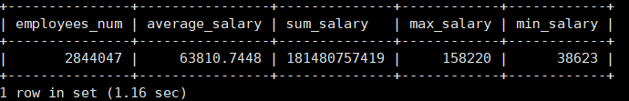
GROUP BY
指定字段中，字段值相同的放同一组。
select指定的字段要么就要包含在group by语句的后面，作为分组的依据；要么就要被包含在聚合函数中
例如统计employees表中的男女分别多少人
1 | select gender,count(gender) as num from employees group by gender; |
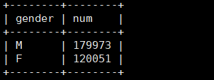
例如统计薪水表中在1986-01-01到1987-01-01同一天入职并且拥有相同工资人数，只显示人数大于25的统计结果。
1 | select salary,from_date, count(*) as num from salaries where from_date between '1986-01-01' and '1987-01-01' group by salary,from_date having num>25; |
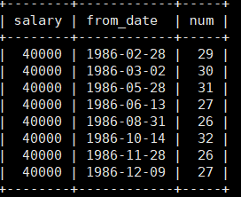
HAVING
having通常与group by 联合使用。
having 用于对分组后的结果进行条件筛选，因此having 只能出现在group by 后面。
where的筛选条件时发生在group by 之前，并且条件中不能使用集合函数。having 子句虽然发生在group by 之后，但是可以使用集合函数。
当一个语句中同时出现where、group by、having
先选择出满足where条件的数据行，然后再进行分组，然后执行集合函数，再执行having。
例如employees表中的姓氏为“F”开头的男女生人数，但是最后只显示女生人数。
1 | select gender,count(gender) as num from employees where first_name like "F%" group by gender having gender='F'; |
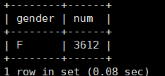
多表查询
多表查询是通过各个表之间的共同列的相关性来查询数据。多表查询首先要在这些表中建立连接，再在连接生成的结果集基础上进行查询。
1 | select [表名.]目标字段表达式 as 别名,...... from 左表名 as 别名 连接类型 右表名 as 别名 on 连接条件 where 条件表达式; |
内连接
(1) cross join: 交叉连接。相当于将一个表每一行和另一个表每一行连接在一起形成一个新的行。‘
1 | select 字段名 from 表1 cross join 表名2; |
例如将deparments与dept_manager表交叉连接在一块


连接部分结果
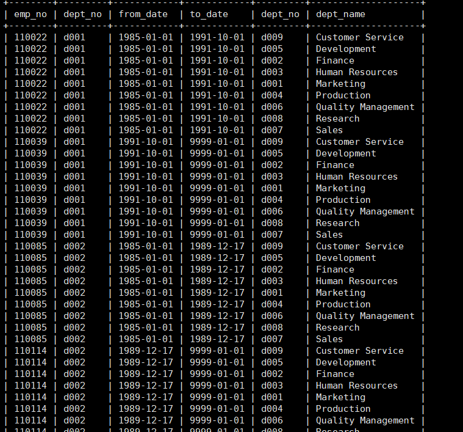
(2) inner join 或 join: 内连接，用比较运算符设置连接条件，只返回满足连接条件的数据行，时将交叉连接生成的结果集按照连接条件进行筛选后形成的。
1 | select 字段名 from 表1 join 表2 on 表1.字段名 比较运算符 表2.字段名; |
或者
1 | select 字段名 from 表1,表2 where 表1.字段名 比较运算符 表2.字段名; |
例如将deparments与dept_manager表在dept_no相同下的连接
1 | select * from dept_manager join departments on departments.dept_no=dept_manager.dept_no |

内连接还包括三种连接：
① 等值连接：连接条件用=来比较连接字段的值，上述例子就是等值连接。
② 非等值连接：连接条件使用除=之外的比较运算符。
③ 自然连接：与等值连接相同，都是在连接条件中使用比较运算符，但结果集中不包括重复字段。
例如上述例子使用自然连接
1 | select * from dept_manager natural join departments; |
或者
1 | select * from dept_manager join departments using(dept_no); |
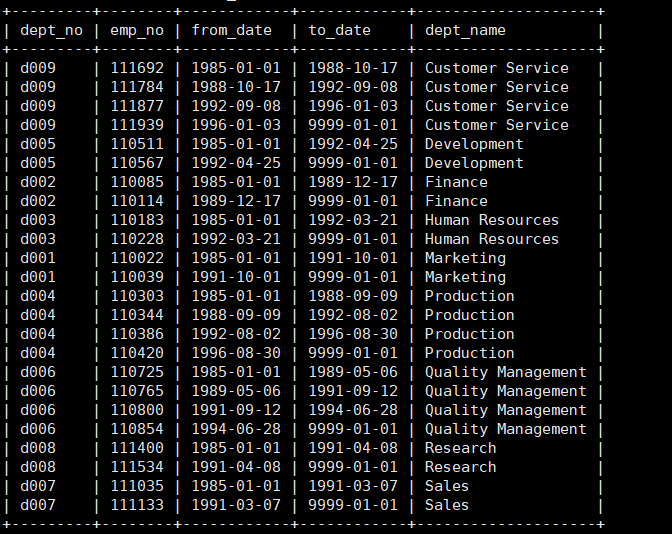
自连接：一个表的两个副本之间的内连接。同一个表名在from子句中出现两次，故为了区别，必须对表指定不同的别名，字段名前也要加上表的别名进行限定，想不到什么实际应用场景。
外连接
外连接有主从表之分同时只适用于两个表。
(3) left 或 left outer join : 左外连接，即左表为主表，将左表所有数据行与右表中的每一行按连接条件进行匹配，结果包含左标的所有数据行。左表与右表没有相匹配的行，则在结果集中右表字段都以NULL或0来填充。
(4) right join 或 right outer join: 右外连接，即右表为主表，将右表所有数据行与左表中的每一行按连接条件进行匹配，结果包含右标的所有数据行。左表与右表没有相匹配的行，则在结果集中左表字段都以NULL或0来填充。
(5) full join 或 full outer join: 完全连接，结果集包含两个连接表的所有数据行，两个表没有数据则用NULL或0来填充。
子查询
子查询是将一个select语句嵌套在另一个select语句的where子句中的查询。子查询也可以嵌套在insert、update、delete语句中。
应注意如下两点
(1) 使用圆括号将子查询的select语句括起来
(2) 当子查询返回值为单个值时，子查询可以应用到任何表达式中。
子查询分别是比较子查询，IN子查询，批量比较子查询和EXISTS子查询。
比较子查询
使用比较子查询,得出emp_no=’10001’所住公寓的公寓名.
1 | select dept_name from departments where dept_no=(select dept_no from dept_emp where emp_no='10001'); |

IN子查询
父查询与子查询之间用IN或NOT IN进行连接并判断某个字段的值是否在子查询查找到的集合中.
例如姓氏为Fei名字为B开头的人在就职期间的最高薪水,显示emp_no,first_name,last_name和max(salary)
1 | select emp_no,first_name,last_name,max(salary) from salaries natural join employees where emp_no in (select emp_no from employees where first_name ="Fei" and last_name like "B%") group by emp_no,first_name,last_name; |
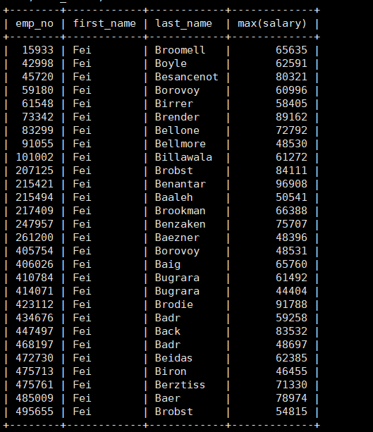
批量比较子查询
在子查询结果不止一个时候，父查询和子查询之间需要比较运算符进行连接。这个时候就需要子查询前面加上ANY或者ALL.
ANY:在子查询前面使用ANY时，会使用指定的比较运算符将一个表达式的值或字段的值与每一个子查询返回值进行比较，只要有一次比较的结果为TRUE，则整个表达式的值为TRUE，否则为FALSE；
例如显示薪水大于155513的员工信息。
1 | select * from employees where emp_no = ANY(select emp_no from salaries where salary>=155513); |
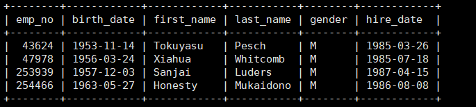
怎么理解呢，使用ANY字段就类似于IN字段，只要emp_no的条件在子查询的结果里面，成立一条或多条该结果就满足where比较条件。
ALL：指定比较运算符将一个表达式的值或者字段的值与每一个子查询返回值进行比较，只有当所有比较的结果都为TRUE时，整个表达式的值才为TRUE，否则为FALSE；
EXISTS子查询/NOT EXISTS
对于子查询结果判断是否为空，如果子查询结果为空，则返回FALSE，否则返回TRUE。
NOT EXISTS则相反。
例如薪水大于158220的信息存在则输出公寓信息表。
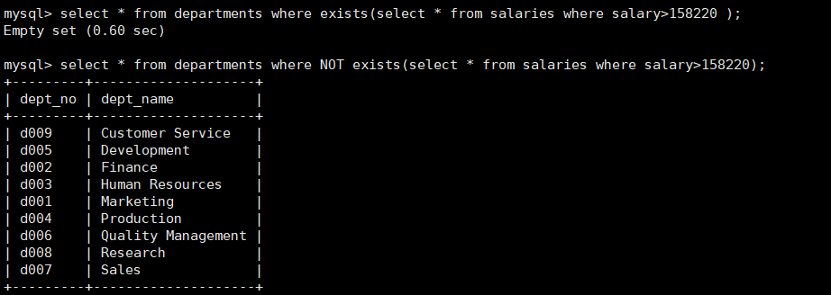
子查询与多表查询的选择
（1）当输出信息来自多个表时候，选择连接查询。
（2）当查询语句输出信息来自一张表时，但是限制条件来自另一张表，使用子查询。
（3）查询输出信息和where子句都只涉及一张表，到那时查询条件涉及集合函数数值比较，一般使用子查询。例如输出分数表分数低于平均成绩的分数信息。
UNION合并结果集
指对多个select语句查询的结果集进行合并操作，组成一个结果集。
（1）所有select语句中字段个数必须相同
（2）所有select语句中数据类型必须相同或者兼容
（3）合并后的结果集字段名是第一个select语句中的字段名，如果要指定别名也只能在第一个select语句中指定。
（4）每一个select语句本身不能包含order by。只能在最后一个使用order by 排序且必须使用第一个select语句中的字段名。
例如输出所有演员和员工的姓氏为’F’开头的姓氏和姓名
1 | select first_name as 姓氏,last_name as 名字 from customer where first_name like 'F%' union select first_name, last_name from actor where first_name like 'F%'; |
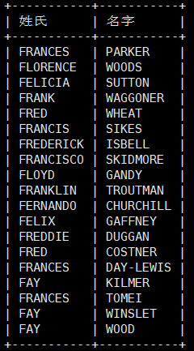
删除
1 | delete [from] 表名 [where 条件表达式] |
使用删除语句时，不写where条件限制，则表示要清空指定数据表。
清空数据表第二种办法
1 | truncate 表名; |
delete为dml语句 truncate为DDL语句
存储过程和函数
Mysql 程序设计
(1) 局部变量
常用于存储过程和存储函数的BEGIN和END语句块之间。
1 | DECLARE 变量名 变量类型 [DEFAULT 默认值]; |
默认值不指定则局部变量初始为NULL,若指定则局部变量初始值为默认值.
变量赋值
1 | set 声明的变量名=赋值; |
自定义变量名
可以不用直接声明变量,直接使用
1 | set @变量名=值; |
这种直接声明用户自定义变量并且赋值.
查看自定义变量值
1 | select @变量名1，@变量名2; |
(2) 流程控制语句
IF、CASE、LOOP、WHILE、ITERATE、REPEAT。
IF用法：
1 | IF 条件表达式 THEN 执行语句 |
CASE用法：
1 | CASE 判断变量 |
LOOP用法：
死循环
1 | [循环标签:] LOOP |
REPEAT用法：
相当于C语言里面do while
1 | [循环标签:] REPEAT |
WHILE用法：
相当于C语言里面的WHILE
1 | [循环标签:] WHILE 循环条件表达式 DO |
(3) 光标
用在BEGIN和END之间，用于mysql程序设计
使用sql语句对数据表查询时，可能返回多条结果，如果对查询结果集中的多条进行逐条读取，则需使用光标。
光标声明
1 | DECLARE 光标名 CURSOR FOR 查询sql语句; |
光标使用
光标使用之前必须先打开，从光标查询结果中取出一条记录可用FETCH语句
1 | OPEN 光标名 |
关闭光标
1 | close 光标名; |
存储程序
存储过程: 数据库服务器上一组预先编译好的sql语句的集合，作为一个对象存储在数据库中，可以作为一个整体来被调用,并不返回结果.
存储函数: 调用过程中可以从调用者哪里获得参数，执行完毕之后返回给调用者一个返回值，类似于C语言中的函数。
触发器: 更新,删除,插入表数据时,引发与之关联的触发器自动执行.
事件: 事件时根据时间调度器在预定时间自动执行的存储程序.
存储过程
存储过程的优势:
① 提高设计灵活性
② 模块化
③ 因为提前编译,提高程序执行速度
④ 减少网络访问负荷
⑤ 可以对数据进行访问权限限制
创建存储过程
1 | CREATE PROCEDURE 存储过程名([IN/OUT/INOUT 参数名1 数据类型,IN/OUT/INOUT 参数名1 数据类型]) [characteristic] |
1 | DELIMITER // |
可将结束符”;”修改为”//“
例子1:创建一个存储过程,参数为员工编号,使用局部变量用来显示员工编号对应的姓氏和姓名
1 | CREATE PROCEDURE `ShowName`(IN emp_no int) |
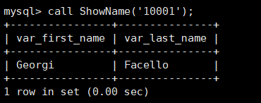
例子2:创建一个存储过程,使用游标来存储姓氏Aamod和名字为 Mandell的薪水表
1 | CREATE PROCEDURE FirstSalary() |
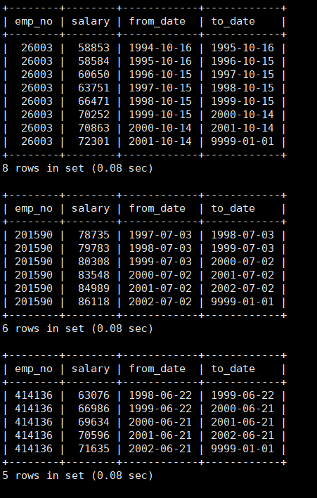
创建调用带参数的存储过程的存储过程
在存储过程中，调用带参数的存储过程
1 | CALL 存储过程名(参数1, 参数2);#参数为变量或者常量 |
例如调用存储过程ShowName
1 | CREATE PROCEDURE CallProcedure() |
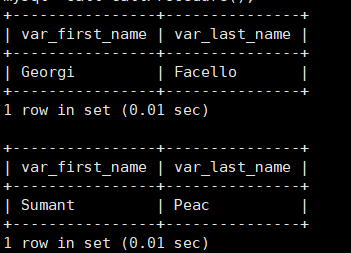
创建带输出参数的存储过程
例如创建存储过程，用参数传入工号，用参数返回最新工资。
1 | CREATE PROCEDURE ShowSalary(IN para_emp_no int,OUT para_salary int) |
管理存储过程
查看存储过程
1 | select name from mysql.proc where db='数据库名'; |
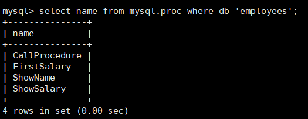
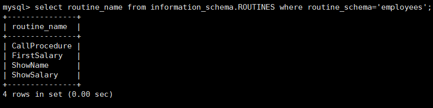
查看所有存储过程信息
1 | show PROCEDURE status where db='数据库名'; |
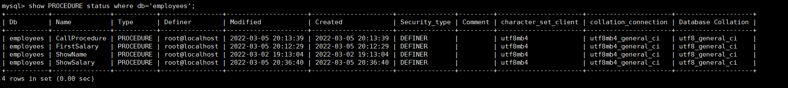
查看存储过程详细信息
1 | show create procedure 存储函数名; |
修改存储过程
如下语法只能修改存储过程特性，如要修改内容，则需删除后重新创建。
1 | alter PROCEDURE 存储过程名 [characteristic....]; |
characteristic如下
LANGUAGE SQL ：说明routine_body部分是由SQL语句组成的，当前系统支持的语言为SQL，SQL是LANGUAGE特性的唯一值
[NOT] DETERMINISTIC ：指明存储过程执行的结果是否正确。DETERMINISTIC 表示结果是确定的。每次执行存储过程时，相同的输入会得到相同的输出。
[NOT] DETERMINISTIC 表示结果是不确定的，相同的输入可能得到不同的输出。如果没有指定任意一个值，默认为[NOT] DETERMINISTIC
CONTAINS SQL | NO SQL | READS SQL DATA | MODIFIES SQL DATA：指明子程序使用SQL语句的限制。
CONTAINS SQL：表明子程序包含SQL语句，但是不包含读写数据的语句；
NO SQL：表明子程序不包含SQL语句；
READS SQL DATA：说明子程序包含读数据的语句；
MODIFIES SQL DATA：表明子程序包含写数据的语句。
默认情况下，系统会指定为CONTAINS SQL
SQL SECURITY { DEFINER | INVOKER } ：指明谁有权限来执行。DEFINER 表示只有定义者才能执行
INVOKER：表示拥有权限的调用者可以执行。默认情况下，系统指定为DEFINER
COMMENT ‘string’ ：注释信息，可以用来描述存储过程或函数
例如修改ShowName的存储过程信息为 MODIFIES SQL DATA以及 SQL SECURITY INVOKER
1 | alter PROCEDURE ShowName MODIFIES SQL DATA SQL SECURITY INVOKER; |
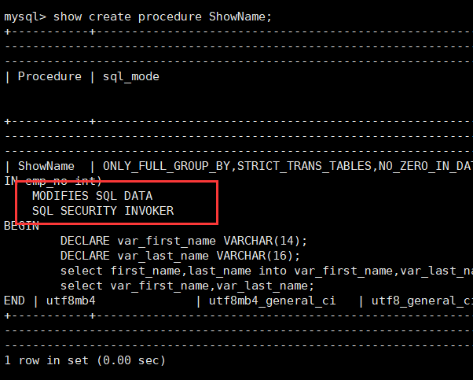
删除存储过程
1 | drop procedure '存储过程名' |
存储函数
创建存储函数
1 | Create FUNCTION 函数名([参数1,参数2,....]) return 返回类型 [characteristic] |
例如比较两个工号最近工资多少
1 | CREATE FUNCTION CompareSalary(emp_no1 int,emp_no2 int) RETURNS int(11) |
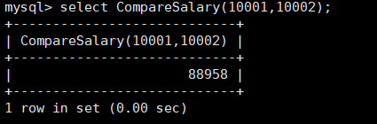
查看存储函数
和存储过程一样。
1 | select name from mysql.proc where db='数据库名'; |
查看存储函数详细信息
1 | show create function 存储函数名; |
查看数据库中所有存储函数信息
1 | show function status where db='数据库名' |
修改存储函数
和存储过程一样 就需要把procedure改为function.
删除存储函数
1 | drop function 存储函数名; |
可以直接使用的数学存储函数
-元减：改变参数的符号1
mysql> SELECT - 2; -> -2
注意，如果这个操作符被用于一个
BIGINT，返回值也是一个BIGINT！这就意味着，应该避免在一个可能有值-2^63的整数上使用-操作符！ABS(X)：返回X的绝对值：1
mysql> SELECT ABS(2); -> 2 mysql> SELECT ABS(-32); -> 32
这个函数可安全地使用于
BIGINT值。SIGN(X)：以-1、0或1方式返回参数的符号，它取决于参数X是负数、0 或正数。1
2
3mysql> SELECT SIGN(-32); -> -1
mysql> SELECT SIGN(0); -> 0
mysql> SELECT SIGN(234); -> 1MOD(N,M)：% 取模 (就如 C 中的%操作符)。返回N被M除后的余数1
2
3mysql> SELECT 253 % 7; -> 1
mysql> SELECT MOD(29,9); -> 2
mysql> SELECT 29 MOD 9; -> 2这个函数可安全地使用于
BIGINT值。最后一个示例可在 MySQL 4.1 中工作。FLOOR(X)：返回不大于X的最大整数值1
2mysql> SELECT FLOOR(1.23); -> 1
mysql> SELECT FLOOR(-1.23); -> -2注意，返回值被转换为一个
BIGINT！CEILING(X)：返回不小于X的最小整数：1
2mysql> SELECT CEILING(1.23); -> 2
mysql> SELECT CEILING(-1.23); -> -1注意，返回值被转换为一个
BIGINT！ROUND(X)ROUND(X,D)将参数X四舍五入到最近的整数，然后返回。两个参数的形式是将一个数字四舍五入到D个小数后返回。1
2
3
4
5mysql> SELECT ROUND(-1.23); -> -1
mysql> SELECT ROUND(-1.58); -> -2
mysql> SELECT ROUND(1.58); -> 2
mysql> SELECT ROUND(1.298, 1); -> 1.3
mysql> SELECT ROUND(1.298, 0); -> 1注意，当参数在两个整数之间时，
ROUND()的行为取决于 C 库的实现。某些取整到最近的偶数，总是向下取，总是向上取，也可能总是接近于零。如果你需要某种取整类型，应该使用一个明确定义的函数比如TRUNCATE()或FLOOR()代替。DIV整除：类似于FLOOR()，但是它可安全地用于BIGINT值。1
mysql> SELECT 5 DIV 2 -> 2
DIV在 MySQL 4.1.0 中新加入。EXP(X)：返回值e(自然对数的底) 的X次方：1
2mysql> SELECT EXP(2); -> 7.389056
mysql> SELECT EXP(-2); -> 0.135335LN(X)返回X的自然对数：1
2mysql> SELECT LN(2); -> 0.693147
mysql> SELECT LN(-2); -> NULL这个函数在 MySQL 4.0.3 被新加入。在 MySQL 中，它是
LOG(X)的同义词。LOG(X)LOG(B,X)：如果以一个参数调用，它返回X的自然对数。1
2mysql> SELECT LOG(2); -> 0.693147
mysql> SELECT LOG(-2); -> NULL如果以两个参数调用，这个函数返回
X任意底B的对数：1
2mysql> SELECT LOG(2,65536); -> 16.000000
mysql> SELECT LOG(1,100); -> NULL任意底选项在 MySQL 4.0.3 中被加入。
LOG(B,X)等价于LOG(X)/LOG(B)。LOG2(X)：返回X的以 2 为底的对数：1
2mysql> 65536); -> 16.000000
mysql> -100); ->LOG2()通常可以用于计数出一个数字需要多少个比特位用于存储它。这个函数在 MySQL 4.0.3 中被添加。在更早的版本中，可以使用LOG(X)/LOG(2)来代替它。LOG10(X)：返回X以 10 为底的对数：1
2
3mysql> 2); -> 0.301030
mysql> 100); -> 2.000000
mysql> -100); ->POW(X,Y)POWER(X,Y)：返回X的Y幂：1
2mysql> SELECT POW(2,2); -> 4.000000
mysql> SELECT POW(2,-2); -> 0.250000SQRT(X)：返回X的非否平方根：1
2mysql> SELECT SQRT(4); -> 2.000000
mysql> SELECT SQRT(20); -> 4.472136PI()：返回 PI 值(圆周率)。缺少显示 5 位小数，但是在 MySQL 内部，为 PI 使用全部的双精度。1
2mysql> SELECT PI(); -> 3.141593
mysql> SELECT PI()+0.000000000000000000; -> 3.141592653589793116
COS(X)：返回X的余弦，在这里，X以弧度给出。1
mysql> SELECT COS(PI()); -> -1.000000
SIN(X)：返回X的正弦，在这里，X以弧度给出。1
mysql> SELECT SIN(PI()); -> 0.000000
TAN(X)：返回X的正切，在这里，X以弧度给出。1
mysql> SELECT TAN(PI()+1); -> 1.557408
ACOS(X)：返回X的反余弦，更确切地说，返回余弦值为X的值。如果X不在-1到1之间的范围内，返回NULL1
2
3mysql> SELECT ACOS(1); -> 0.000000
mysql> SELECT ACOS(1.0001); -> NULL
mysql> SELECT ACOS(0); -> 1.570796ASIN(X)：返回X的反正弦，更确切地说，返回正弦值为X的值。如果X不在-1到1之间的范围内，返回NULL：1
2mysql> SELECT ASIN(0.2); -> 0.201358
mysql> SELECT ASIN('foo'); -> 0.000000ATAN(X)：返回X的反正切，更确切地说，返回正切值为X的值：1
2mysql> SELECT ATAN(2); -> 1.107149
mysql> SELECT ATAN(-2); -> -1.107149ATAN(Y,X)ATAN2(Y,X)：返回两个变量X和Y的反正切。它类似于计算Y / X的反正切，除了两个参数的符号用于决定结果的象限：1
2mysql> SELECT ATAN(-2,2); -> -0.785398
mysql> SELECT ATAN2(PI(),0); -> 1.570796COT(X)：返回X的余切：1
2mysql> SELECT COT(12); -> -1.57267341
mysql> SELECT COT(0); -> NULLRAND()RAND(N)：返回一个范围在0到1.0之间的随机浮点值。如果一个整数参数N被指定，它被当做种子值使用(用于产生一个可重复的数值)1
2
3
4
5mysql> SELECT RAND(); -> 0.9233482386203
mysql> SELECT RAND(20); -> 0.15888261251047
mysql> SELECT RAND(20); -> 0.15888261251047
mysql> SELECT RAND(); -> 0.63553050033332
mysql> SELECT RAND(); -> 0.70100469486881在一个
ORDER BY子句中，不可以使用RAND()值使用一个列，因为ORDER BY将多次重复计算列。从 MySQL 3.23 开始，你可以使用：SELECT * FROM table_name ORDER BY RAND()，这有利于得到一个来自SELECT * FROM table1,table2 WHERE a=b AND c<d ORDER BY RAND() LIMIT 1000的集合中的随机样本。 注意，在一个WHERE子句中的RAND()将在每次WHERE执行时被重新计算。RAND()并不是预期完美的随机数发生器，但是可以代替做为产生特别的随机数一个快速的方法，这样便于在两个不同平台下的同一 MySQL 版本间移动。LEAST(X,Y,...)有两个或更多个参数，返回最小(最小值)的参数。参数使用下列规则进行比较：如果返回值用于一个
INTEGER语境，或所有的参数是整数值，它们作为整数比较。如果返回值用于一个REAL语境，或所有的参数均是实数值，它们作为实数被比较。如果任何一个参数是字母大小写敏感的，参数作为大小写敏感的字符串进行比较。在其它情况下，参数做为忽略大小写的字符中进行比较1
2
3mysql> SELECT LEAST(2,0); -> 0
mysql> SELECT LEAST(34.0,3.0,5.0,767.0); -> 3.0
mysql> SELECT LEAST("B","A","C"); -> "A"在早于 MySQL 3.22.5 的版本中，你可以使用
MIN()代替LEAST。GREATEST(X,Y,...)：返回最大(最大值)参数。参数使用与LEAST一致的规则进行比较：1
2
3mysql> SELECT GREATEST(2,0); -> 2
mysql> SELECT GREATEST(34.0,3.0,5.0,767.0); -> 767.0
mysql> SELECT GREATEST("B","A","C"); -> "C"在早于 MySQL 3.22.5 的版本中，可以使用
MAX()代替GREATEST。DEGREES(X)：将参数X从弧度转换为角度，然后返回：1
mysql> SELECT DEGREES(PI()); -> 180.000000
RADIANS(X)：将参数X从角度转换为弧度，然后返回：1
mysql> SELECT RADIANS(90); -> 1.570796
TRUNCATE(X,D)：将数值X截到D个小数，然后返回。如果D为0，结果将不包含小数点和小数部分：1
2
3
4mysql> SELECT TRUNCATE(1.223,1); -> 1.2
mysql> SELECT TRUNCATE(1.999,1); -> 1.9
mysql> SELECT TRUNCATE(1.999,0); -> 1
mysql> SELECT TRUNCATE(-1.999,1); -> -1.9从 MySQL 3.23.51 开始，所有数字被四舍五入到零。 如果
D是负数，那么数字的整个部分被对准零位输出：mysql> SELECT TRUNCATE(122,-2); -> 100注意，十进值小数在计算机中通常不以精确数字存储，而是双精度型的值，你可能会被下列结果所愚弄：mysql> SELECT TRUNCATE(10.28*100,0); -> 1027上面结果的发生是因为 10.28 实际上是以某些像 10.2799999999999999 的形式被存储的。
存储过程和函数区别
一般来说，存储过程实现的功能要复杂一点，而函数的实现的功能针对性比较强。 存储过程，功能强大，可以执行包括修改表等一系列数据库操作；用户定义函数不能用于执行一组修改全局数据库状态的操作。
① 存储过程必须使用CALL调用，而存储函数不用。
② 对于存储过程来说可以返回参数，如记录集，而函数只能返回值或者表对象。函数只能返回一个变量；而存储过程可以返回多个。
③ 存储过程的参数可以有IN,OUT,INOUT三种类型，而函数只能有IN类型。存储过程声明时不需要返回类型，而函数声明时需要描述返回类型，且函数体中必须包含一个有效的RETURN语句。
④ 存储过程一般是作为一个独立的部分来执行（ EXECUTE 语句执行），而函数可以作为查询语句的一个部分来调用（SELECT调用），
由于函数可以返回一个表对象，因此它可以在查询语句中位于FROM关键字的后面。 SQL语句中不可用存储过程，而可以使用函数
事务
由用户自定义的一系列数据库更新操作，这些操作要么都不执行，要么都执行，是一个不可分割的逻辑工作单元，若执行到事务一半而出现意外，则会将数据回滚到事务发生之前。
事务处理语句
启动事务
1 | start transaction; |
启动事务之后，开始执行事务内的sql语句，sql语句执行完毕后，必须提交事务，才能使事务中的操作永久生效。
1 | commit;#提交事务 |
当事务在执行过程中发生错误，事务中的所有操作都要取消，返回事务执行之前，这就是回滚事务
1 | ROLLBACK;#回滚事务 |
事务的特性具有原子性、一致性、隔离性以及持久性。
原子性：事务是一个不可分割的逻辑工作单元。要么事务内操作全部执行，要么全部不执行。
一致性：事务发生前后数据始终保持一致。
隔离性：多个事务一起执行，相互间不干扰。
持久性：事务对数据库的数据修改将永久生效。
另外，事务并不能在存储函数和触发器中使用。
例如在存储过程中添加两条公寓信息，使用事务插入一条数据和不使用事务插入一条数据。
事务隔离
数据库访问采用的是并发的访问，多线程访问数据库时，可能出现脏读、幻读和不可重复读等多线程问题。
①脏读就是一个事务读取了另一个事务没有提交的数据。如果另一个事务回滚，则读到的就是脏数据。
②不可重复读就是一个事务内，对同一数据进行两次相同查询，得到的结果不一致。
③幻读就是在同一事务中，两次相同条件查询到的记录不一样。
因此为了避免上述三种情况的发生，设置了四种隔离级别,由低到高。
READ UNCOMMITTED:该级别下的事务可以读取另一个未提交事务的数据。实际情况很容易出现脏读，很少被应用。
READ COMMITTED: 该级别下的事务只能读取已经提交的数据。
REPEATABLE READ:mysql默认的事务隔离级别，确保同一事务的多个实例并发读取数据读到一样的数据，但是这种隔离级别容易出现幻读。
SERIALIZABLE:最高隔离级别，通过对事务强制性排序，使事务之间不会冲突，从而解决幻读。但是容易出现超时和锁竞争问题。
| 隔离级别 | 脏读 | 不可重复读 | 幻读 |
|---|---|---|---|
| READ UNCOMMITTED | ✔ | ✔ | ✔ |
| READ COMMITTED | ❌ | ✔ | ✔ |
| REPEATABLE READ | ❌ | ❌ | ✔ |
| SERIALIZABLE | ❌ | ❌ | ❌ |
在事务中，如下可以改变该事务的隔离级别
1 | SET [SESSION|GLOBAL] TRANSACTION ISOLATION LEVEL {READ UNCOMMITTED|READ COMMITTED|REPEATABLE READ|SERIALIZABLE} |
索引
为搜索条件的字段上创建了索引，mysql在查找时，无需扫描任何记录即可迅速得到目标记录所在位置，能够大大提高查找效率。
如果数据表是一本书，索引就是目录。
索引特性：
① 唯一索引可以保证数据记录的唯一性
② 可以加快数据的检索速度
③ 可以加快表与表之间的连接。在实现数据的参照完整性方面有特别的意义
④ 在使用order by 和group by子句进行数据检索时，可以显著减少查询中分组和排序的时间。
⑤ 检索数据的过程中使用优化隐藏器，可以提高系统性能。
索引分类：
① 普通索引：由KEY或INDEX定义的索引，mysql中的基本索引类型，允许在定义索引的字段中插入重复值空值。
② 唯一索引：由UNIQUE定义的索引，指索引字段的值必须唯一，但允许有空值。如果是多个字段建立的组合索引，字段值的组合必须唯一。在创建主键或唯一约束的字段上会自动创建唯一索引。主键索引是一种特殊的唯一索引，不允许有空值。
③ 全文索引：由FULLTEXT定义的索引，指在定义索引的字段上支持值的全文查找。该索引类型允许在索引字段上插入重复值和空值。他只能创建在CHAR、VARCHAR、TEXT类型的字段上。
④ 空间索引：由SPATIAL定义的索引，是只能在空间数据类型的字段上建立的索引。空间数据类型有四种分别为GEOMETRY、POINT、LINESTRING和POLYGON。需要注意的是，创建空间索引的字段，必须将其声明为NOT NULL。
⑤单个索引：单个字段上创建的索引。它可以是普通索引、唯一索引、或者全文索引。
⑥多列索引：在表中多个字段上创建的索引。
索引设计原则：
①索引并非越多越好
②避免对经常更新的表建立过多的索引，并且索引字段尽可能少
③数据量小的表最好不要使用索引
④不同值较少的字段不要建立索引字段
⑤为经常需要进行排序、分组和连接查询的字段建立索引
创建索引
在创建表时
1 | create table 表名(字段名 数据类型 [完整性条件约束],.......,[UNIQUE|FULLTEXT|SPATIAL] INDEX|KEY [索引名](字段名 [ASC|DESC])) |
[]中的字段为可选
例如 创建一个学生表有学号、姓名、性别、电话字段。学号为int类型、姓名为varchar(10)、性别为enum(‘男’、’女’)、电话为int(11)。其中为电话添加唯一索引且别名为telephone，学号为主键约束。
1 | create table student(学号 int PRIMARY KEY, 姓名 varchar(10) character set utf8 NOT NULL, 性别 enum('男','女') character set utf8 NOT NULL,电话 int(11) NOT NULL, UNIQUE INDEX telephone(电话)); |
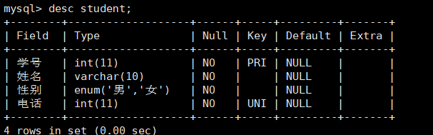
例如创建course表有课程号、教师号、课程名、教师名、教室字段。课程号和教师号为int类型，剩下字段为text类型。创建课程号和教师号为唯一索引的多列索引。该多列索引的别名为name
1 | create table course(课程号 int NOT NULL, 教师号 int NOT NULL, 课程名 text character set utf8 NOT NULL,教师名 text character set utf8 NOT NULL,教师 text character set utf8 NOT NULL, UNIQUE INDEX name(课程号,教师号)); |
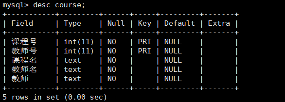
例如创建test表，设置id1、id2、id3、id4、di5全为int类型的字段。且每一个字段为一个唯一索引,索引名为d1、d2、d3、d4、d5。
1 | create table test(id1 int,id2 int,id3 int,id4 int,id5 int, |
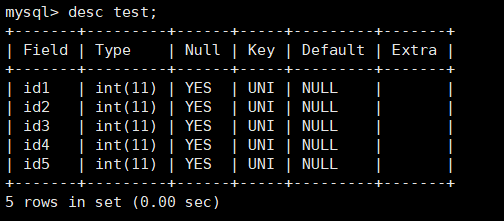
在已经存在的表
1 | create [UNIQUE|FULLTEXT|SPATIAL] INDEX 索引名 ON 表名(表中字段名[(长度)]); |
例如先创建一个teacher表。然后再创建教师号的唯一索引名为teacher_num。
1 | create table teacher(教师号 int NOT NULL, 教师姓名 varchar(10) character set utf8 NOT NULL, 性别 enum('男','女') character set utf8 NOT NULL,电话 int(11) NOT NULL);#首先创建teacher表 |
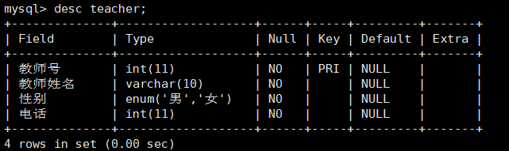
删除索引
1 | DROP INDEX 表中索引名 ON 表名; |
例如删除刚刚创建的student中的telephone索引。
1 | DROP INDEX telephone on student; |
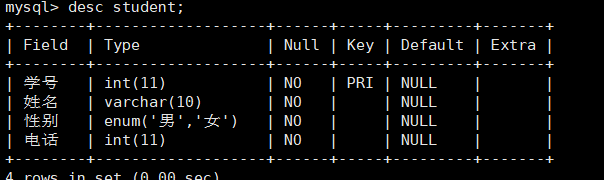
查看表中索引
1 | show index from 表名; |
例如查看test中的索引
1 | show index from test; |
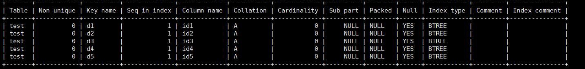
查看student表中的索引
1 | show index from student; |
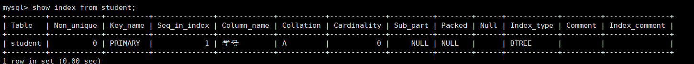
视图
视图是一个数据库对象，是一个或多个基表中导出的基表。通过视图访问的数据不作为对路的对象存储在数据库内。视图被定义后便存储在数据库中，通过视图看到的数据只是存放在基表中的数据。通过视图进行数据修改时，相应的基表也会发生变化。若基表的数据发生变化，这种变化也会自动反映在视图中。视图可以时一个基表数据，也可以是多个基表数据的联合，也可以有其他一个或多个视图产生。
- 筛选表中记录
- 防止未经许可的用户访问敏感数据
- 将多个物理数据表抽象为一个逻辑数据表
视图上的操作和基表类似，但是数据库管理系统对视图的更新操作往往存在一定的限制。数据库管理系统对视图进行的权限管理和基表也有所不同。但是视图可以增强数据的逻辑独立性和安全性。
视图优点
视图某种程度上来说只是给查询起了一个名字，把它作为对象保存在数据库中。只要使用简单的select语句即可查看视图中查询的执行结果。对视图的一切操作最终会转换为对基表的操作。
- 视图能简化用户操作，使用户可以将注意力集中在自己关心的数据上。
- 使用户从多角度看待同一数据
- 视图使数据库具备逻辑独立性
- 视图能够对机密数据提供安全保护。
创建视图
1 | create|REPLACE [ALGORITHM={UNDEFINED|MERGE|TEMPTABLE}] VIEW 视图名[(查询字段别名)] as sql查询语句 [WITH [CASCADED|LOCAL] CHECK OPTION] |
在该视图是根据另一个视图定义时，加入with check option语句后，local和cascaded关键字将决定检查测试范围。
local关键字仅作用在定义的视图上，cascaded关键字会对与该视图相关的所有视图和基表进行检查，默认是cascaded。
创建视图要求创建者具有针对视图的create view 权限，以及针对 select 语句选择的每一列上的某些权限。
视图创建默认属于当前数据库，这个与存储过程和函数类似。
algorithm定义视图所使用的算法,默认使用merge
merge:一个合并算法，每当执行的时候,先将视图的sql语句与外部查询视图的sql语句,合并在一起,最终执行；
temptable: 将视图结果放置到临时表中，意味这要mysql要先创建好一个临时表，然后将结果放到临时表中去，然后再使用这个临时表进行相应的查询。
undefined: 选择所要使用的算法。如果可能，它倾向于MERGE而不是TEMPTABLE，这是因为MERGE通常更有效，而且如果使用了临时表，视图是不可更新的。
查询字段别名需要与sql查询语句中的查询字段一一对应。
例如定义一个视图名为high_salary，查询工资大于150000的员工，字段名换为员工编号，薪水，拥有薪水日期，更改薪水日期。
1 | create view high_salary(员工编号,薪水,拥有薪水日期,更改薪水日期) as select * from salaries where salary>150000; |
再查看该视图。
1 | select * from high_salary; |
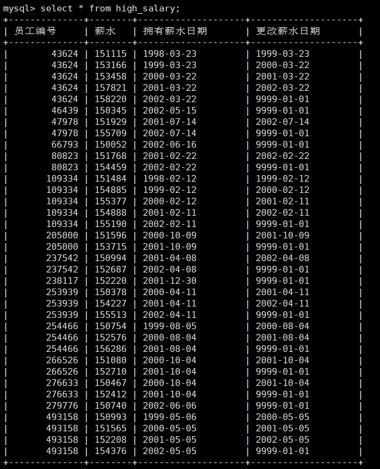
例如创建一个多表联合的视图，显示最高薪水工资高于150000的员工表，字段名为员工编号，姓氏，姓名，性别，年龄，最高薪水
1 | create view highsalary_info(员工编号,姓氏,姓名,性别,年龄,最高薪水) as select emp_no,first_name,last_name,gender,TIMESTAMPDIFF(year,birth_date,curdate()),max(salary) from employees natural join salaries where salary>150000 group by emp_no,first_name,last_name,gender; |
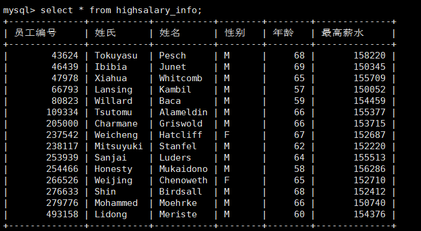
查看视图
查看数据库中已经存在的视图定义，查看视图必须有showview权限。
desc 视图名1
2
3
4
5

2. ```sql
show table status like '视图名'\Gshow create view 视图名;1
2
3
4
5
6
7
8
9

#### 修改视图
可以替换同名的视图,将原始视图改为现在设置的视图。
```sql
ALTER [ALGORITHM={UNDEFINED|MERGE|TEMPTABLE}] VIEW 视图名[(查询字段别名)] as sql查询语句 [WITH [CASCADED|LOCAL] CHECK OPTION]
例如更改high_salary视图
1 | ALTER VIEW high_salary as select emp_no from salaries where salary>150000; |
删除视图
1 | drop view 视图名; |
例如删除high_salary视图
1 | drop view high_salary; |
更新视图
这里指的是通过视图去更新基表中的数据。
插入数据
使用insert语句需要进行插入的用户必须有在基表中插入数据的权限，否则插入会失败。
如果视图插入字段没有包含基表中所有字段为NOT NULL的字段，则会插入失败。
如果视图的数据是由聚合函数或者表达式计算得到的，则插入不成功。
不能再使用了DISTINCT、UNION、TOP、GROUP BY、HAVING的视图中插入数据。
创建视图中使用了with check option的视图，对视图进行修改必须符合with check option中的限定条件。
对于多个基表连接查询的视图来说，一次插入只能作用于一个基表。
1 | insert [into] 视图名 values(视图的各个字段); |
总的来说就是把视图当作一种特殊的表进行插入操作，插入时注意以上条件。
例如创建一个视图，查询student表
1 | create view stu as select * from student; |
在视图中插入一条数据
1 | insert stu values(6666,'yyds','男','111111111'),(7777,'wuhu','男','22222222'); |

更新数据
1 | update 视图名 set 字段名='字段值' where 限制条件; |
例如将上述插入数据yyds的性别改为女
1 | update stu set 性别='女' where 姓名='yyds'; |
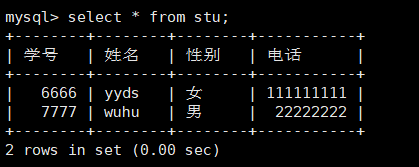
删除数据
1 | delete [from] 视图名 where 限制条件; |
例如删除学生姓名为wuhu那一条记录。
1 | delete from stu where 姓名='wuhu'; |
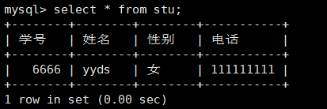
触发器
触发器定义了一系列操作，这一系列称为触发程序。当触发器所在表上出现了insert、update、delete操作时，将激活触发器。触发器基于一个表创建，但是可以针对多个表进行操作，因此触发器可以用来对表实施复杂的完整性约束。
触发器优点：
- 触发器可以自动执行，当对表进行insert、update、delete操作，试图修改表中数据时，相应触发器立即自动执行。
- 触发器可以对数据库中表相关进行层叠更改。
- 触发器可以实现表的约束但实现不了复杂的约束。触发器可以引用其他表中字段，从而实现多表之间的复杂约束。
- 触发器可以维护冗余数据，实现外键级联。
创建触发器
1 | create TRIGGER 触发器名 AFTER/BEFORE INSERT/UPDATE/DELETE ON 表名 for EACH ROW |
触发器时数据库对象，因此创建触发器时，需要指定该触发器属于哪一个数据库。
触发器是在表上创建的。这个表必须时基表，不能是临时表，也不能是视图。
触发事件有三种：INSERT、UPDATE、DELETE
INSERT：将新纪录插入表时激活触发操作
UPDATE：更新表中数据时激活触发操作
DELETE：删除表中数据时激活触发操作
触发时间有两种：BEFORE和AFTER.BEFORE是在触发时间发生之前激活触发程序，AFTER是在触发事件之后执行触发程序。
FOR EACH ROW表示行级触发器。表示数据变动操作影响的每一条记录都会执行一次触发程序。
触发程序中的select语句不能产生结果集。
触发程序中可以使用OLD和NEW关键字。
- 向表中插入新纪录时，在触发程序中可以使用NEW关键字表示记录。当需要访问新纪录中的某个字段时，可以使用”NEW.字段名”进行访问。
- 从表中删除某条旧记录时，在触发程序中可以使用OLD关键字表示删除的旧记录。当需要访问删除旧记录中的某个字段时，可以使用’’OLD.字段名”进行访问。
- 修改表中字段也是同理
- OLD记录只是只读，在触发程序中只能读取，不能修改。
- 在BEFORE触发程序中，可以使用”set NEW.字段名=值”更改NEW记录的值。但是在AFTER触发程序中，不能使用”SET NEW.字段名=值” 更改NEW记录的值。
- 对于INSERT操作，只有NEW关键字时合法的。DELETE操作只有OLD关键字时合法的。
例如创建一个触发器tr_delete_info，在删除一个员工信息时,自动删除所有表中有关该员工的信息.
1 | create trigger tr_delete_info after delete on employees for each row |
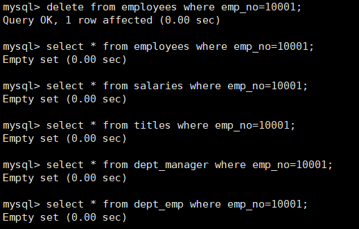
例如创建一个触发器tr_add_info,新增一条员工信息,判断该员工年龄,当年龄大于30岁在title中表中插入记录为Senior Engineer,薪水为80000,分配到 Prouduction.
1 | create trigger tr_add_info after insert on employees for each row |
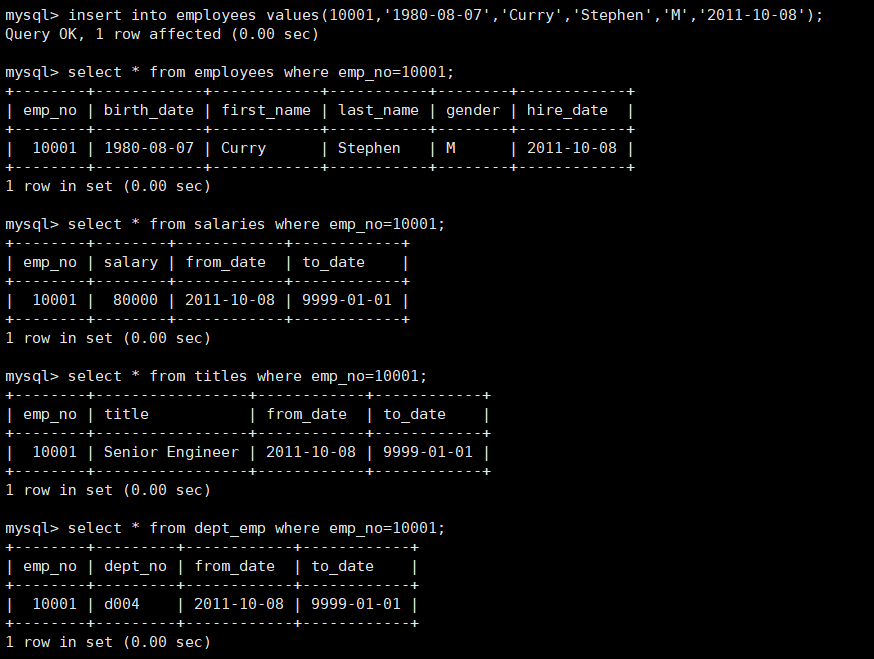
例如创建一个触发器tr_promotion基于dept_manager表,更新数据调整部门manager时,同时在工资记录表中插入一条新的数据来记录新manager的工资,并修改原来记录的to_date字段为升值日,和在dept_manager表中插入一条新的记录,修改原来记录.
1 | create trigger tr_promotion after update on dept_manager for each row |
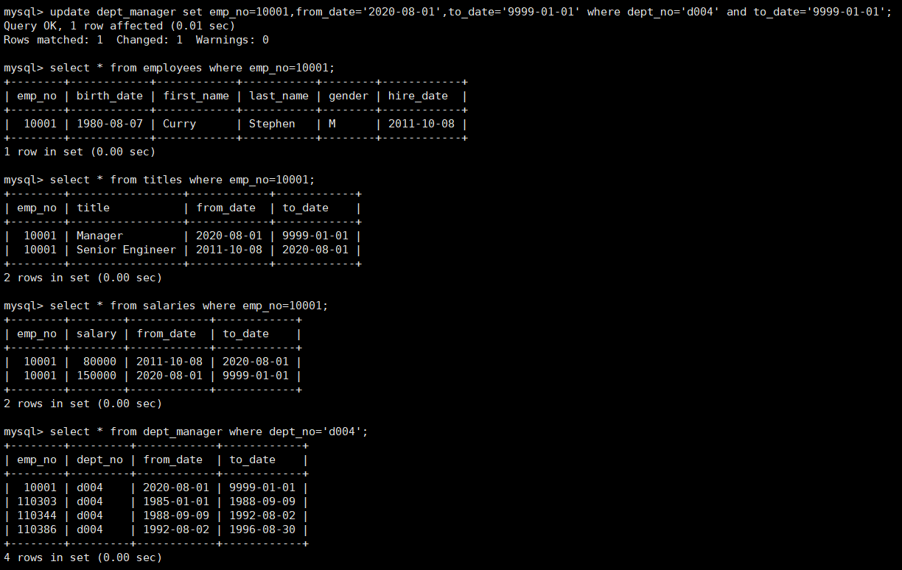
删除触发器
与视图类似.
1 | drop trigger 触发器名 |
查看触发器
与视图一样,只需将view改为trigger即可.
数据库管理
数据备份（数据导出）
数据备份的分类
数据库是否在线划分
- 热备份。数据库正处于运行状态，此时依赖数据库的日志文件进行备份
- 温备份。进行数据备份时数据库服务正常运行，但是数据只能读不能写
- 冷备份。数据库处于关闭状态，能够较好地保证数据库的完整性。
备份内容划分
- 逻辑备份。使用软件从数据库中提取数据并将结果写到一个文件上，该文件格式一般与原数据库的文件格式不同，只是源数据库中数据内容的一个映像。
- 物理备份。直接复制数据库文件。与逻辑备份相比，其速度较快，但占用空间较大。
备份数据设计的范围来划分
- 完整备份。完整备份指备份整个数据库，这是任何备份策略中都要求完成的第一种备份类型，其他所有备份都依赖于完整备份。
- 增量备份。指对数据库从上一次完整备份或者最近一次增量备份改变的内容的备份。
- 差异备份。对最近一次完整备份以后发生改变的数据进行备份。
备份操作如下，备份不需要进入数据库。
1 | mysqldump -u username -h 保存主机 -p 数据库名 [欲备份表名1,欲备份表名2,....] > 备份存储文件名.sql |
例如备份数据库employees
1 | mysqldump -u root -h 127.0.0.1 employees -p > employees.sql |
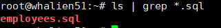
mysqldump还提供如下参数，可以通过mysqldump --help自行查看
–all-database:备份所有数据库
–databases dbname:备份某个数据库
–lock-tables:锁定表。
–lock-all-tables:锁定所有的表
–events:备份EVENTS的相关信息
–no-data:只备份DDL语句和表结构，不备份数据。
–master-date=n:备份的同时导出二进制日志文件及其位置。如果n为1，则把信息保存为change master语句。如果n为2，则把信息保存为注释掉的change master语句。
–routines:将存储过程和存储函数备份
–single-transaction:实现热备份
–triggers:备份触发器
数据恢复（数据导入）
将备份的数据恢复到当前数据库中，也叫导入数据库文件。mysql保证数据安全的方法。
（1）数据库备份。通过多出数据或者表文件的副本来保护数据。
（2）二进制日志文件保存更新数据的所有语句。
（3）数据库复制。mysql的内部复制功能建立在两个或多个服务器之间，是通过设定他们之间的主从关系来实现的。
同样不需要进入数据库
1 | mysql -u 用户名 -p [数据库名] <数据库备份文件名.sql |
数据库名可以不用指定，如果不指定，则根据sql文件自己创建。如果指定，则会导入相应数据库中，指定数据库不存在则会导入出错。
例如将mysqlsample导入到数据库中。
1 | mysql -u root -p < mysqlsampledatabase.sql |
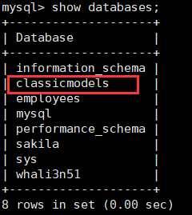